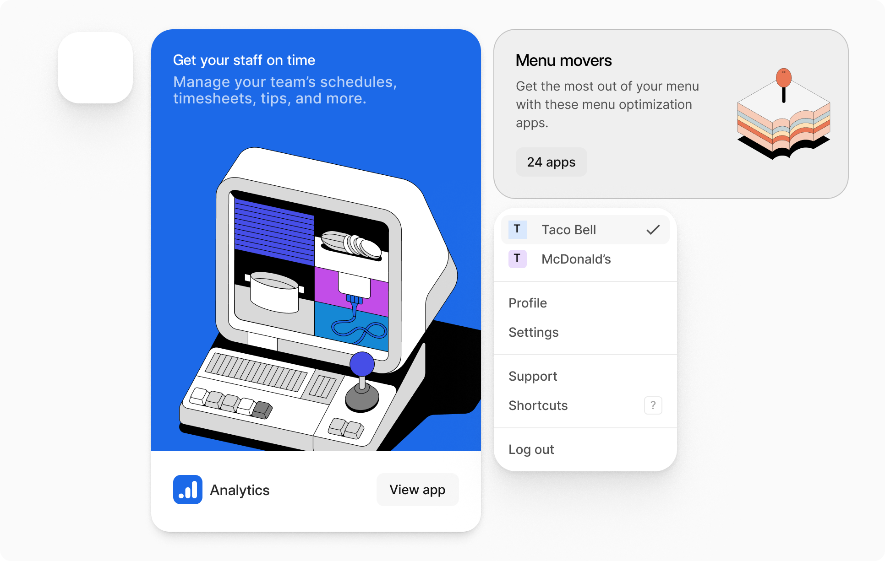
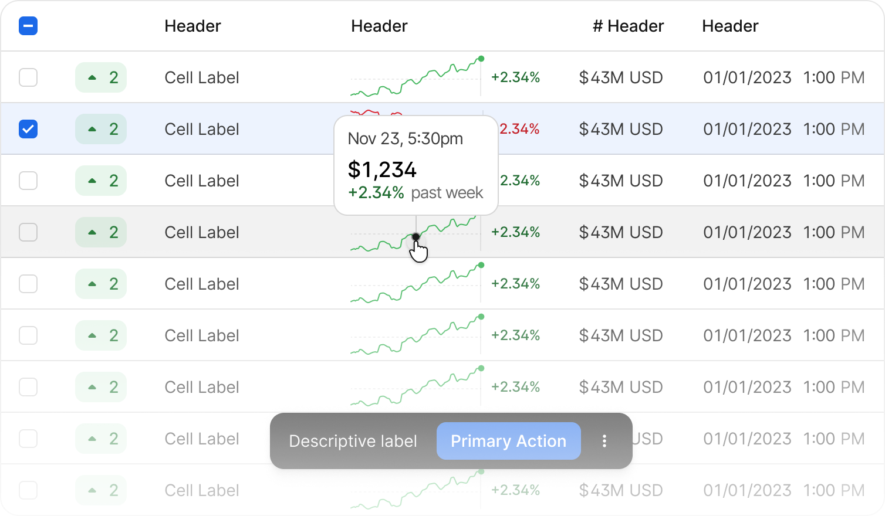

Context
Otter helps QSRs manage their delivery, drive-thru and dine-in businesses from a single platform.
Our internal (Beam) and external (Otter) apps relied on two separate design system libraries. This made them hard to maintain and caused frustration and visual inconsistencies throughout our platforms. The team was tasked with creating a new design system (CSDS) to unify them. I was one of the designers who helped drive this initiative.
My role: Improving accessibility across our two platforms, standardizing core elements, and creating a designer-friendly Figma table component (major impact).

Standardizing component variables (radius, spacing, drop shadow) for different use cases.
Table Component
The table is one of the most complex and utilized components on both the Beam and Otter platforms. The goal was to improve the overall productivity of our end users (designers), who build tables for their mocks in Figma. This involved heavy collaboration with product designers (workshops) and engineers. This collaboration was crucial to ensure it met user needs, was scalable, and was user-friendly.
